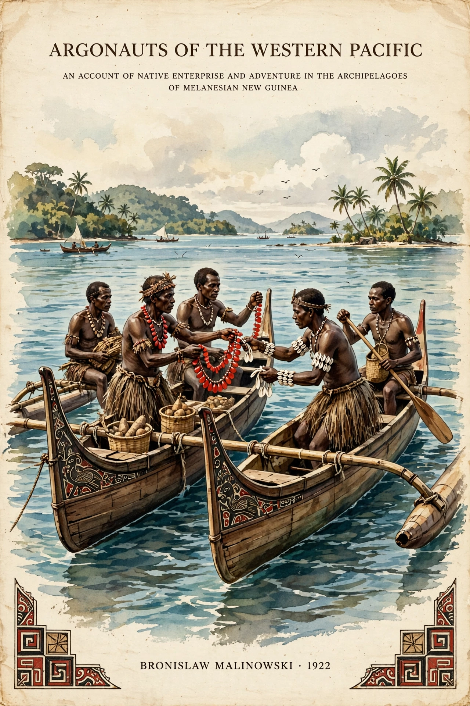

Argonauts of the Western Pacific is a 1922 ethnography by Polish-British anthropologist Bronisław Malinowski, based on fieldwork in the Trobriand Islands (now Papua New Guinea) during the First World War. It is regarded as a founding work of modern social anthropology and of participant observation.

| Argonauts of the Western Pacific | |
|---|---|
| Author | Bronisław Malinowski |
| Published | 1922 |
| Subject | Ethnography; Kula ring |
The book describes the Kula ring, a ceremonial exchange system in which islanders voyage in large canoes to exchange shell valuables — necklaces (soulava) circulating clockwise and armbands (mwali) counter-clockwise — building prestige and partnerships rather than profit. Malinowski also documented gardening, magic, canoe-building and everyday life.
Malinowski argued the ethnographer must grasp "the native's point of view" through long-term immersion, learning the language and recording concrete evidence. The work helped displace armchair anthropology, though later scholars critiqued its colonial context and Malinowski's posthumously published diaries.